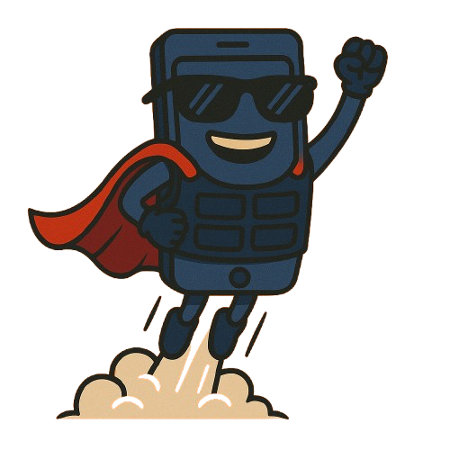

Este site é o resultado do TCC (Trabalho de Conclusão de Curso) do aluno Lucas Rodrigues, pela Universidade Unifeso no ano de 2025, e tem como objetivo informar e transmitir conhecimentos a todas as pessoas interessadas em se proteger de possíveis ataques em seus aparelhos móveis Android.
Espero que com os conhecimentos coletados, compilados e publicados aqui, consigamos atingir um patamar um pouco maior em segurança digital, através da informação compartilhada.
A todos que acessaram, espero que o conteúdo aqui lhes possa ser de alguma utilidade e agradeço por sua atenção.